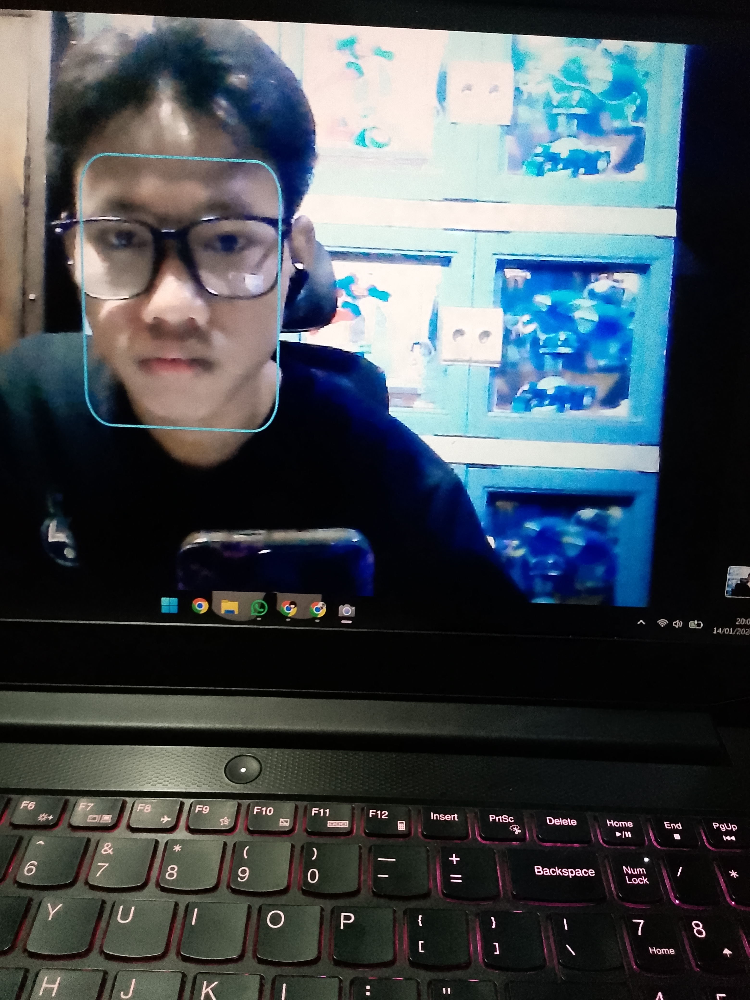

UI Design / Fullstack Dev / Network Technician
Fokus pada pembuatan interface yang bersih dan pengalaman digital yang bermakna. Berbasis di Jakarta, bekerja secara global.
Web Design / Development
Branding / UIUX